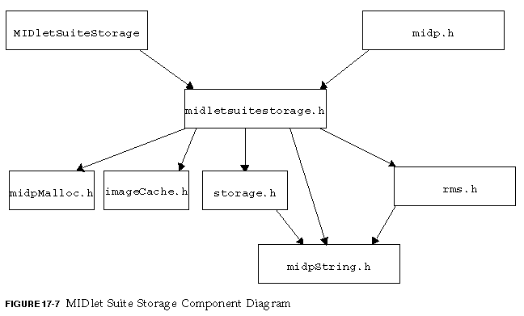

The MIDlet Suite Storage component is responsible for the following:
Each MIDlet suite in persistent storage (each installed MIDlet suite) is uniquely identified by a storage name constructed from the combination of the values of the MIDlet-Name and MIDlet-Vendor attributes. The syntax and content of storage names are implementation dependent. Only packages installed or upgraded using this API appear in the list of known packages.
Managing a MIDlet suite's information means storing any data that is received or created during installation, and removing all the data when the MIDlet suite is removed. This component uses the native persistent storage services of the platform, and must be ported to different platforms.
The MIDlet suite storage component has a C interface and a secure Java platform interface. The C interface is in the file suitestore_common.h. The Java platform interface is MIDletSuiteStorage.
The default implementation is in the file suitestore_intern.c, which use midpStorage.c and rms.c. The figure below shows the MIDlet suite storage component's dependencies.

The MIDlet Suite Storage component provides the following services to both Java platform and native components:
To avoid creating a class for only a few runtime environment services, the
MIDletSuiteStorage class provides the following functionality:
See the com.sun.midp.main package for more information.
MIDlet suites are identified globally by their name, vendor, and version. Because there can only be one version of a suite on a device at time, the name and vendor can be used to identify a MIDlet suite. However, it saves a lot of code if a MIDlet suite can be uniquely identified with only one value, a value that can be used in ASCII files. The MIDlet suite storage component gives each MIDlet suite a device-unique ASCII string of a arbitrary length that cannot be used for another suite, even after the suite is deleted.
An implementation of the MIDlet suite storage component MAY internally use the unique identifier as part of a file name, none of the other AMS components use the identifier to access MIDlet suite storage files directly.
The MIDlet Suite Storage component assumes the file system is one large repository. It also assumes that file names can be of arbitrary length and can be made up of any printable ASCII characters. Using these assumptions, the component builds file names by appending the following three strings, without directory separators: